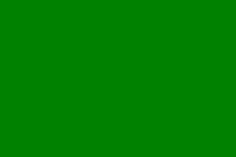
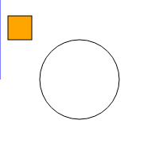
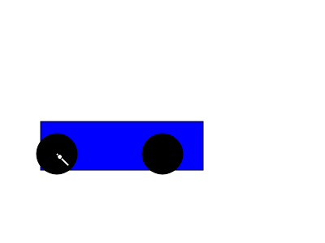
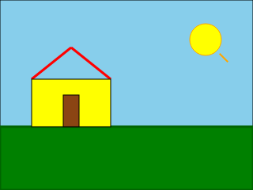
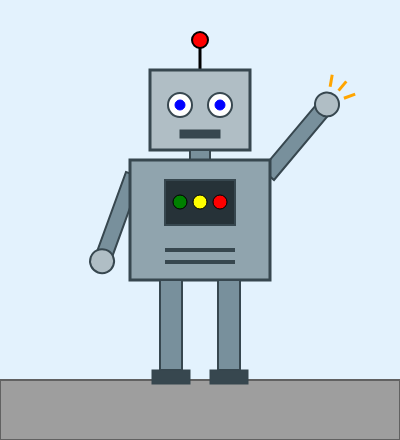

Fase 2: da AST ao SVG · Laboratório de Programação Avançada II · Compiladores
Integrantes: Alexsander (20010480), Bruno Costa Dourado (20010547), João Vitor Leão Bonifácio (23024758), Vinicius Binda (23024415), Vitor Hideki Tokunaga (23024862), Felipe Martins Dos Santos (23024894).
O compilador completo segue o caminho programa → tokens → AST → verificação semântica → SVG.
Nesta fase foram escritos semantica.js (função verificar(ast)) e
gerador.js (função gerar(ast)), e o parser.js passou a guardar a linha nos nós.
| Nó da AST | Campos | SVG gerado |
|---|---|---|
Programa | tela, filhos |
O elemento raiz <svg> (dados da tela) com os filhos dentro, na ordem do programa (o que vem depois fica por cima). |
Tela | linha, largura L, altura A |
<svg xmlns="http://www.w3.org/2000/svg" width="L" height="A" viewBox="0 0 L A"> |
Reta | linha, x1, y1, x2, y2, estilo |
<line x1 y1 x2 y2 fill stroke stroke-width/> |
Circulo | linha, cx, cy, raio, estilo |
<circle cx cy r fill stroke stroke-width/> (r = raio) |
Retangulo | linha, x, y, largura, altura, estilo |
<rect x y width height fill stroke stroke-width/> |
estilo.borda | cor | stroke (padrão black) |
estilo.fundo | cor | fill (padrão none) |
estilo.espessura | número | stroke-width (padrão 1) |
Grupo | linha, modificadores, filhos |
<g transform="..."> … filhos … </g>. Os filhos usam coordenadas locais (origem no ponto do grupo).
Sem modificadores: <g> sem transform. |
Rotacao | graus N | rotate(N) — N graus, sentido horário, em torno da origem atual |
Deslocamento | dx X, dy Y | translate(X Y) — X para a direita, Y para baixo |
| vários modificadores | lista, na ordem escrita | Todos no mesmo transform, separados por espaço, na ordem em que foram escritos:
grupo gira 30 move 50 60 gira 15 → transform="rotate(30) translate(50 60) rotate(15)" |
tela 400 300
// um carro simples
retangulo 50 150 200 60 fundo azul
grupo move 70 190 {
circulo 0 0 25 fundo preto
grupo gira 45 {
reta 0 0 20 0 borda branco espessura 2
}
}
grupo move 200 190 {
circulo 0 0 25 fundo preto
}
<svg xmlns="http://www.w3.org/2000/svg" width="400" height="300" viewBox="0 0 400 300">
<rect x="50" y="150" width="200" height="60" fill="blue" stroke="black" stroke-width="1"/>
<g transform="translate(70 190)">
<circle cx="0" cy="0" r="25" fill="black" stroke="black" stroke-width="1"/>
<g transform="rotate(45)">
<line x1="0" y1="0" x2="20" y2="0" fill="none" stroke="white" stroke-width="2"/>
</g>
</g>
<g transform="translate(200 190)">
<circle cx="0" cy="0" r="25" fill="black" stroke="black" stroke-width="1"/>
</g>
</svg>
Esse programa (o exemplo do enunciado escrito em Rabisko) gera exatamente o SVG esperado no enunciado; isso é conferido automaticamente em testes.mjs.
| Cor em Rabisko | Cor no SVG | Amostra |
|---|---|---|
preto | black | |
branco | white | |
vermelho | red | |
verde | green | |
azul | blue | |
amarelo | yellow | |
laranja | orange | |
roxo | purple | |
#RRGGBB | passa direto, sem alteração (inclusive maiúsculas/minúsculas): #87CEEB → #87CEEB |
verificar(ast) percorre a AST inteira de forma recursiva (a tela, depois cada item na ordem do programa,
descendo em grupos aninhados de qualquer profundidade) e devolve todos os erros como [ { linha, mensagem }, ... ].
Vetor vazio = nenhum erro. Se houver erro, nenhum SVG é gerado e a página mostra cada mensagem.
| Verificação | Nó | Mensagem |
|---|---|---|
| largura ou altura igual a zero | Tela | linha N: a tela precisa ter largura e altura maiores que zero |
| raio igual a zero | Circulo | linha N: o círculo precisa ter raio maior que zero |
| largura ou altura igual a zero | Retangulo | linha N: o retângulo precisa ter largura e altura maiores que zero |
A linha N é a da palavra-chave que inicia o nó (tela, circulo, retangulo). Na página, cada mensagem aparece como
Erro semântico na linha N: ….
linha (linha do token da palavra-chave) em Tela, Reta,
Circulo, Retangulo e Grupo. A reta e o grupo não têm verificação hoje, mas já carregam a linha para futuras regras.fill, stroke e stroke-width,
com os padrões none, black e 1 quando o atributo não foi escrito. Assim nunca há reta invisível nem forma preta.estilo); o gerador só lê.fundo. É aceita e o fill é escrito, mas não tem efeito visual (uma linha não tem área). Sem fundo, sai fill="none", como no exemplo do enunciado.stroke-width="0", ou seja, forma sem contorno. É útil para formas só com preenchimento.<g> sem o atributo transform (em vez de transform=""). As coordenadas dos filhos ficam iguais às do grupo pai.<g …></g>: é SVG válido e não desenha nada.transform, na ordem escrita, sem simplificar
(gira 30 gira 15 → rotate(30) rotate(15), e não rotate(45)). O efeito dos grupos pais é composto pelo próprio aninhamento dos <g>.rotate(400) é válido e equivale a 40°).viewBox.NUM ou COR, que não podem conter aspas nem <.gerar(ast) visita cada nó e desce nos filhos (como o paraMermaid da aula). Não usa nenhuma biblioteca de desenho nem de geração de SVG.svg.js da página-base não estava no repositório da Fase 1, escrevemos um equivalente (valida o texto com DOMParser, confere o xmlns, desenha e baixa o arquivo). Ele pode ser trocado pelo da página-base sem mudar o compilador.circulo 150 100 0, que agora é erro semântico. Para continuar sendo um programa válido, o raio passou a 15. O raio zero passou a ser testado no caso S2.Os casos estão em casos.js (e na lista da página). node testes.mjs confere todos e grava os SVGs em testes/svg/;
as imagens estão em testes/png/ e as capturas da página em testes/pagina/. Detalhes em casos-teste.md.
| Caso | O que cobre | Resultado |
|---|---|---|
| V1 | programa mínimo (só a tela) | SVG vazio 800×600 |
| V2 | as três formas, todos os atributos, cores por nome e hexadecimal, atributo repetido | SVG |
| V3 | grupo sem modificador, com gira, com move, com vários e grupo vazio | SVG |
| V4 | carro, grupos aninhados em 3 níveis | SVG |
| V5 | casa e sol (cenário completo) | SVG |
| S1 | tela com altura zero | linha 1: a tela precisa ter largura e altura maiores que zero |
| S2 | círculo de raio zero dentro de dois níveis de grupo | linha 6: o círculo precisa ter raio maior que zero |
| S3 | as três verificações juntas (inclusive dentro de grupos) | 4 erros: linhas 1, 2, 4 e 6 |




No V2, o último comando é retangulo 0 0 300 200 espessura 0 fundo azul fundo verde: ele cobre a tela inteira
por cima das outras formas (a ordem do programa define quem fica por cima) e sai verde, não azul (atributo repetido vale o último).
Programa em desenho-final/robo.rab (caso D1). Usa as três formas, cores por nome e hexadecimais e grupos aninhados
em até 4 níveis com os dois modificadores: o robô inteiro é um grupo move 120 40; cada braço é um grupo
move … gira … (o direito, gira 220, aponta para cima); a mão é um grupo move 8 92 dentro do braço;
e os tracinhos de aceno são grupos gira 60/90/120 dentro da mão. A cabeça, os olhos, o corpo e as pernas também são grupos
com coordenadas locais.
Arquivos: desenho-final/robo.rab, desenho-final/robo.svg, desenho-final/robo.png.
